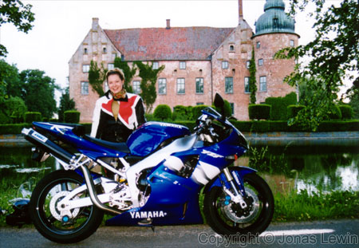

Mikela
|
This
woman really has patience. We went all the way from the east coast to the west coast, and back. Only short breaks, so she could smoke, and stretch her legs and her back. That day (summer '99), the weather was perfect. Only a few white clouds, and not too cold. She is the smallest and the lightest person ever to take a ride with me. The bikes handles very well when she is on the back seat. Of course the bike handles different when she is on, compared to no passenger at all, but the difference is marginal. This woman is one of the few people, ever to ride with me on the yearly get together in Kristianstad. The event draws thousands of bikers every year. The time from the first biker starts off till the last one starts off, are more than 2 hours. So you can imagine that the trail of bikes is quite long. Every summer I'm looking forward to take her for a ride. I like to take passengers on my bike, especially women that have never, or almost never, tried it before. She had taken a ride on a custom bike before, but she felt that this was completely different. This was the way you should ride bikes. As you may have noticed, she is one of the few people ever to ride both my bikes. Only 2 people have done this so far. Her comments about the new bike was that she sat higher on this one, and got more pain in the back. It was also a little bit faster. My comment about this is that she had grown, and so had my bike. This time we took a little bit shorter trip. Unfortunately we did not find as great roads as I wanted. Better luck next time. |